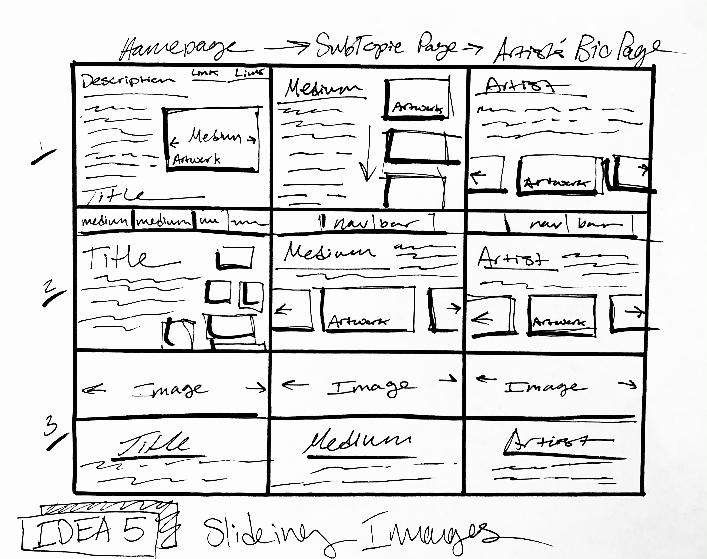
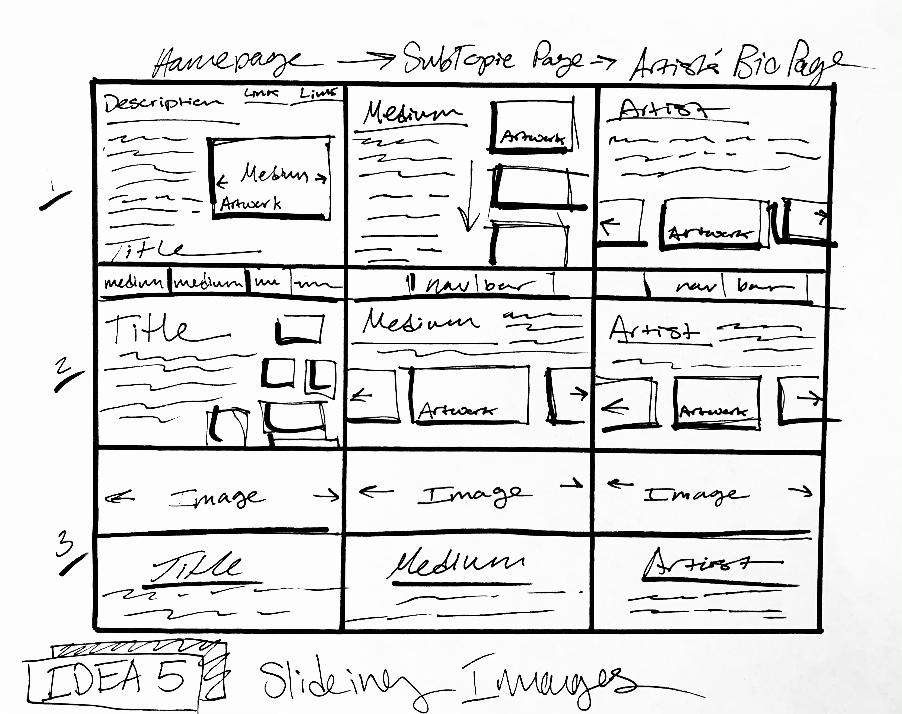

Challenge
The purpose of this lab was create a series of prototype designs for my project team. We were instructed to produce fifteen sketches, three different designs for five overall ideas.
Problems
I had some trouble with getting started. It took some time to loosen up and draw without getting stuck or overly critical. Eventually, I was able to sketch some quick designs and get my ideas down on paper.
Results
I completed three sketches for each of my five webpage ideas for a total of fifteen designs. I enjoyed the process and feel that I was able to explore different ideas and possible layouts for my team’s final project.

 
